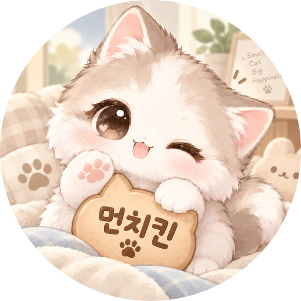
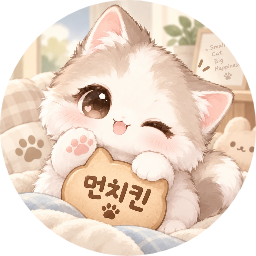

반가운 인사를 대신
들어온 청취자를 맞이하고, 후원에 고맙다고 말해요. DJ는 지금 이야기에 집중하세요.
자동 인사 · 후원 감사오늘도 함께할 방송 친구
인사부터 게임까지, 방송에 즐거움을 더해요.
DJ는 이야기하고, 먼치킨은 곁에서 도울게요.
2026년 12월 31일까지 무료 · 먼치킨만 쓰면 신청하지 않아도 돼요.
먼치킨 0.19.35 · Windows 10·11 (64비트) · 151MB · 무료 베타
설치가 막혔나요? 그림으로 보는 설치 안내 →
먼치킨과 함께라면
챙길 일은 조금 줄이고,
함께 웃는 시간은 조금 더.
들어온 청취자를 맞이하고, 후원에 고맙다고 말해요. DJ는 지금 이야기에 집중하세요.
자동 인사 · 후원 감사초성퀴즈, 업다운, 가위바위보. 채팅 한 줄로 함께 놀고 DJ가 고른 보상을 받아요.
미니게임 · 팀대항전청취자마다 DJ 캐릭터를 키우고, 모은 냥으로 옷을 입혀요. 애정도가 오르면 표정도 달라져요.
캐릭터 · 옷장 · 레벨신청곡은 순서대로 모으고, 후원 감사 목록에서는 아직 인사하지 못한 사람을 챙겨요.
신청곡 대기열 · 감사 목록청취자·하트·후원을 상황판에서 보고, 이름을 누르면 청취자 카드가 열려요.
상황판 · 청취자 카드PC에 먼치킨을 켜 두면 휴대폰 방송에도 함께해요. 효과음과 TTS는 PC에서 나와요.
Windows · 휴대폰 방송
다시 만나 반가워요
하나로 이어지는 먼치킨 계정
먼치킨을 켜면 귀여운 캐릭터가 반겨요.
한 번 로그인하면 다음부터 자동으로 이어져요.
방송이 끝나도, 추억은 계속
베타 테스트 중 · 다른 DJ분들께는 추후 공개 예정
내 박제판·최초 박제판·방송 추억이 모이는
나만의 작은 사이트를 준비하고 있어요.
내이름.먼치킨.com
최초 박제판에 이름이 적히면 저절로 올라가요.
청취자는 하트와 댓글·답글로 마음을 남겨요.
우리의 작은 기록장
함께 웃었던 순간을 모아요.
♡ 하트로, 댓글로, 함께 남기는 추억
지어낸 이름과 내용으로 만든 화면 예시예요
처음이어도 괜찮아요
Windows PC에 먼치킨을 설치하고 먼치킨 계정으로 로그인해요.
스푼 DJ 계정으로 연결해 먼치킨이 내 방송을 돕도록 허용해요.
방송 청취자 목록에서 먼치킨을 매니저로 지정하면 준비 끝!
먼치킨.com의 받기 단추로 받은 파일만 이렇게 열어 주세요. 파일 이름은 Munchkin-Setup으로 시작해요. 다른 곳에서 받은 파일은 열지 마세요.
받기 단추를 누르면 엣지 오른쪽 위에 다운로드 창이 떠요. 창이 사라졌다면 키보드에서 Ctrl + J를 누르면 다시 열려요.
파일 옆 "···"(더 보기)을 눌러요휴지통 단추는 누르지 마세요. 파일이 지워져요.
메뉴에서 "유지"를 눌러요"파일을 남겨 둔다"는 뜻이에요.
Microsoft Defender SmartScreen은 이 파일이 안전한지 확인할 수 없습니다.
창 아래 "더 보기"를 눌러요파란 "삭제" 단추는 누르지 마세요.
"그래도 계속"을 눌러요이제 파일이 PC에 저장돼요.
"파일 열기"를 눌러요다운로드 폴더에서 파일을 두 번 눌러도 돼요. 다음은 아래 윈도우 파란 창이에요.
파일을 열면 윈도우가 파란 창을 한 번 더 띄울 수 있어요. 크롬으로 받았을 때도 같아요.
Microsoft Defender SmartScreen에서 인식할 수 없는 앱의 시작을 차단했습니다. 이 앱을 실행하면 PC가 위험에 노출될 수 있습니다.
글 아래 "추가 정보"를 눌러요처음에는 "실행" 단추가 안 보여요. "추가 정보"를 눌러야 나와요.
"실행"을 누르면 설치가 이어져요"알 수 없는 게시자"는 서명이 없다는 뜻이에요. 앱 이름이 Munchkin-Setup인지만 확인해 주세요.
설치가 끝나면 먼치킨을 켜서 "스푼 연결"을 눌러 주세요. 이 창들은 처음 한 번만 나와요. 새 버전은 먼치킨이 켜질 때 저절로 업데이트돼요.
오른쪽 위 다운로드 단추(↓)를 누르면 받은 파일 목록이 보여요. 먼치킨 파일 옆에 경고가 붙어 있으면, 그 파일을 눌러 받기를 이어 가는 단추를 눌러 주세요. 그다음은 위 "설치 파일을 열 때"와 같아요.
그림은 실제 창을 간단히 옮겨 그린 거예요. 엣지와 윈도우 버전에 따라 글자나 단추 모양이 조금 다를 수 있어요.
궁금한 점이 있나요?
먼치킨은 2026년 12월 31일까지 무료예요. 먼치킨만 쓰는 분은 신청하지 않아도 돼요. 추억앨범은 베타 테스트 중이며 다른 DJ분들께는 추후 공개할 예정이에요.
네. Windows PC에 먼치킨을 켜 두면 휴대폰 방송에서도 인사·게임·통장이 움직여요. 효과음과 TTS는 PC에서 나와요.
먼치킨은 DJ의 PC에서 움직여요. 방송할 때 PC와 먼치킨을 함께 켜 두세요.
아직은 베타 테스트 중이라 다른 DJ분들의 신청은 받지 않아요. 추후 공개할 예정이에요. 미리 보기 · 한이준 추억앨범에서 어떤 모습인지 먼저 만나 보세요.
먼치킨을 켜면 새 버전으로 저절로 업데이트해요. 공지와 자세한 업데이트 소식은 먼치킨 디스코드에서 만나요.